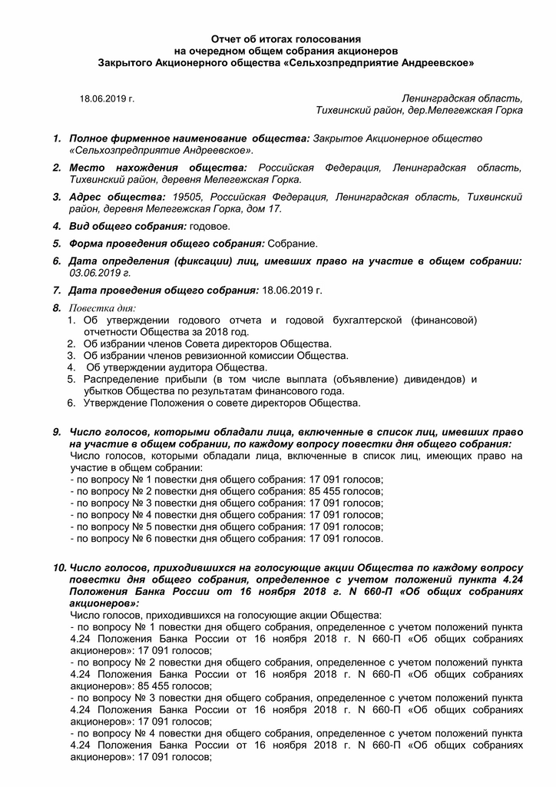
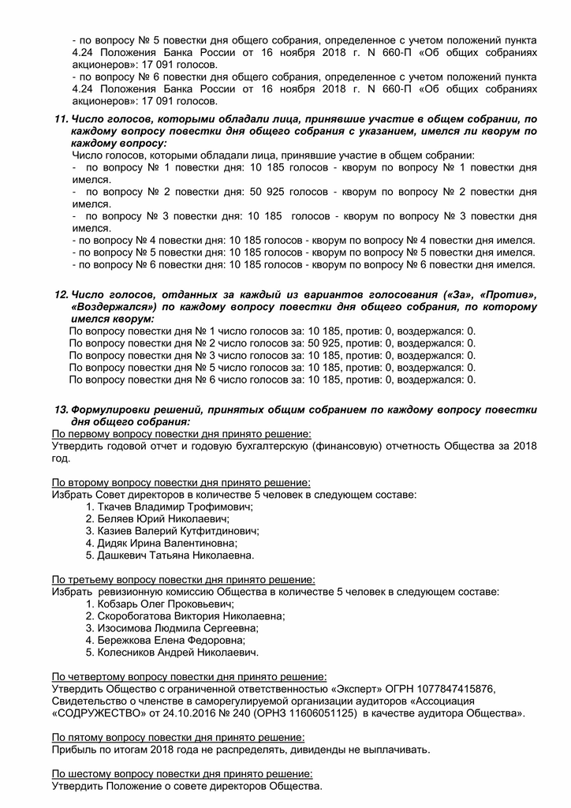
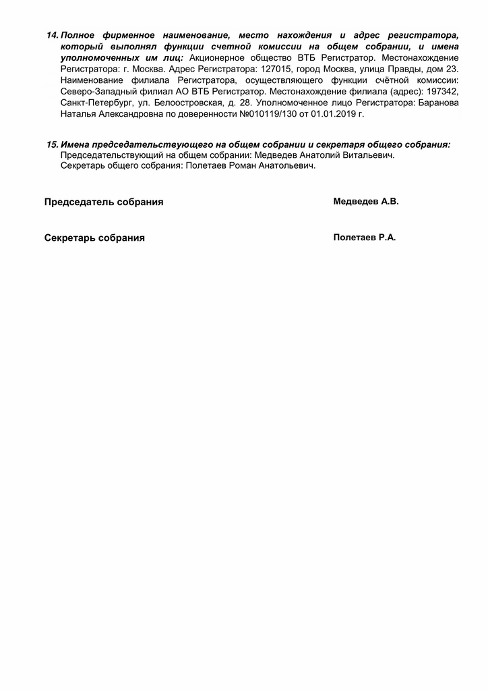

Новости
СООБЩЕНИЕ О ПРОВЕДЕНИИ ГОДОВОГО ОБЩЕГО СОБРАНИЯ АКЦИОНЕРОВ
Закрытого акционерного общества «Сельскохозяйственное предприятие Андреевское» ОГРН 1024701848852
Место нахождения (почтовый адрес):
187504 Ленинградская область, Тихвинский район, дер. Мелегежская горка, дом 17.
УВАЖАЕМЫЕ АКЦИОНЕРЫ!
Совет директоров ЗАО «Сельскохозяйственное предприятие Андреевское» уведомляет своих акционеров о проведении годового общего собрания акционеров ЗАО «Сельскохозяйственное предприятие Андреевское» проводимого в форме собрания (совместного присутствия для обсуждения вопросов повестки дня и принятия решений по вопросам, поставленным на голосование) 23 июня 2021 года в 11 часов 00 минут (время местное) по адресу: Ленинградская область, Тихвинский муниципальный район, Мелегежское сельское поселение, деревня Мелегежская горка, дом 17, административное здание ЗАО «Сельскохозяйственное предприятие Андреевское», 2 этаж, кабинет директора.
Время начала регистрации лиц, участвующих в собрании: 23 июня 2021 года в 10 часов 45 минут по адресу: Ленинградская область, Тихвинский муниципальный район, Мелегежское сельское поселение, деревня Мелегежская горка, дом 17, административное здание ЗАО «Сельскохозяйственное предприятие Андреевское», 2 этаж, кабинет директор (время местное).
Дата составления списка акционеров, имеющих право на участие в годовом общем собрании акционеров: 29 мая 2021 г.
Акционер, прибывший для регистрации и участия в работе собрания должен иметь при себе паспорт (документ, удостоверяющий личность).
Полномочные представители (доверенные лица) акционеров допускаются к участию в работе собрания только при наличии, оформленной в соответствии с законодательством РФ, доверенности (или документа, подтверждающего их полномочия) и документа, удостоверяющего его личность (паспорт).
Повестка дня годового общего собрания акционеров:
1. Об утверждении годового отчета и годовой бухгалтерской (финансовой) отчетности Общества за 2020 год.
2. Об избрании членов Совета директоров Общества.
3. Об избрании членов ревизионной комиссии Общества.
4. Об утверждении аудитора Общества.
5. Распределение прибыли (в том числе выплата (объявление) дивидендов) и убытков Общества по результатам финансового года.
Материалы, предоставляемые акционерам при подготовке к проведению годового общего собрания, не рассылаются. С информацией, подлежащей представлению акционерам при подготовке и проведении годового общего собрания акционеров, можно ознакомиться по предварительной записи с 09-00 до 11-00 местного времени по адресу: Ленинградская область, Тихвинский муниципальный район, Мелегежское сельское поселение, деревня Мелегежская горка, дом 17, административное здание ЗАО «Сельскохозяйственное предприятие Андреевское», 2 этаж, кабинет директора с 24 мая 2021 года, а также на сайте общества: http://www.zaoandreevskoe.ru в информационно-телекоммуникационной сети «Интернет».
Председатель Совета директоров
Дашкевич Татьяна Николаевна
06.07.2020
Отчет об итогах голосования
на очередном общем собрания акционеров
Закрытого Акционерного общества «Сельхозпредприятие Андреевское»
06.07.2020 г. Ленинградская область, Тихвинский район, дер.Мелегежская Горка
1. Полное фирменное наименование общества: Закрытое Акционерное общество «Сельхозпредприятие Андреевское».
2. Место нахождения общества: Российская Федерация, Ленинградская область, Тихвинский район, деревня Мелегежская Горка.
3. Адрес общества: 187504, Российская Федерация, Ленинградская область, Тихвинский район, деревня Мелегежская Горка, дом 17.
4. Вид общего собрания: годовое.
5. Форма проведения общего собрания: Собрание.
6. Дата определения (фиксации) лиц, имевших право на участие в общем собрании: 11.06.2020 г.
7. Дата проведения общего собрания: 06.07.2020 г.
8. Повестка дня:
- 1. Об утверждении годового отчета и годовой бухгалтерской (финансовой) отчетности Общества за 2019 год.
- 2. Об избрании членов Совета директоров Общества.
- 3. Об избрании членов ревизионной комиссии Общества.
- 4. Об утверждении аудитора Общества.
- 5. Распределение прибыли (в том числе выплата (объявление) дивидендов) и убытков Общества по результатам финансового года.
9. Число голосов, которыми обладали лица, включенные в список лиц, имевших право на участие в общем собрании, по каждому вопросу повестки дня общего собрания:
Число голосов, которыми обладали лица, включенные в список лиц, имеющих право на участие в общем собрании:
- по вопросу № 1 повестки дня общего собрания: 17 091 голосов;
- по вопросу № 2 повестки дня общего собрания: 85 455 голосов;
- по вопросу № 3 повестки дня общего собрания: 17 091 голосов;
- по вопросу № 4 повестки дня общего собрания: 17 091 голосов;
- по вопросу № 5 повестки дня общего собрания: 17 091 голосов;
- по вопросу № 6 повестки дня общего собрания: 17 091 голосов.
10. Число голосов, приходившихся на голосующие акции Общества по каждому вопросу повестки дня общего собрания, определенное с учетом положений пункта 4.24 Положения Банка России от 16 ноября 2018 г. N 660-П «Об общих собраниях акционеров»:
Число голосов, приходившихся на голосующие акции Общества:
- по вопросу № 1 повестки дня общего собрания, определенное с учетом положений пункта 4.24 Положения Банка России от 16 ноября 2018 г. N 660-П «Об общих собраниях акционеров»: 17 091 голосов;
- по вопросу № 2 повестки дня общего собрания, определенное с учетом положений пункта 4.24 Положения Банка России от 16 ноября 2018 г. N 660-П «Об общих собраниях акционеров»: 85 455 голосов;
- по вопросу № 3 повестки дня общего собрания, определенное с учетом положений пункта 4.24 Положения Банка России от 16 ноября 2018 г. N 660-П «Об общих собраниях акционеров»: 17 091 голосов;
- по вопросу № 4 повестки дня общего собрания, определенное с учетом положений пункта 4.24 Положения Банка России от 16 ноября 2018 г. N 660-П «Об общих собраниях акционеров»: 17 091 голосов;
- по вопросу № 5 повестки дня общего собрания, определенное с учетом положений пункта 4.24 Положения Банка России от 16 ноября 2018 г. N 660-П «Об общих собраниях акционеров»: 17 091 голосов.
11. Число голосов, которыми обладали лица, принявшие участие в общем собрании, по каждому вопросу повестки дня общего собрания с указанием, имелся ли кворум по каждому вопросу:
Число голосов, которыми обладали лица, принявшие участие в общем собрании:
- по вопросу № 1 повестки дня: 10 185 голосов - кворум по вопросу № 1 повестки дня имелся.
- по вопросу № 2 повестки дня: 50 925 голосов - кворум по вопросу № 2 повестки дня имелся.
- по вопросу № 3 повестки дня: 10 185 голосов - кворум по вопросу № 3 повестки дня имелся.
- по вопросу № 4 повестки дня: 10 185 голосов - кворум по вопросу № 4 повестки дня имелся.
- по вопросу № 5 повестки дня: 10 185 голосов - кворум по вопросу № 5 повестки дня имелся.
12. Число голосов, отданных за каждый из вариантов голосования («За», «Против», «Воздержался») по каждому вопросу повестки дня общего собрания, по которому имелся кворум:
По вопросу повестки дня № 1 число голосов за: 10 185, против: 0, воздержался: 0.
По вопросу повестки дня № 2 число голосов за: 50 925, против: 0, воздержался: 0.
По вопросу повестки дня № 3 число голосов за: 10 185, против: 0, воздержался: 0.
По вопросу повестки дня № 5 число голосов за: 10 185, против: 0, воздержался: 0.
13. Формулировки решений, принятых общим собранием по каждому вопросу повестки дня общего собрания:
По первому вопросу повестки дня принято решение:
Утвердить годовой отчет и годовую бухгалтерскую (финансовую) отчетность Общества за 2018 год.
По второму вопросу повестки дня принято решение:
Избрать Совет директоров в количестве 5 человек в следующем составе:
- 1. Соботюк Василий Михайлович.
- 2. Головнев Дмитрий Викторович.
- 3. Казиев Валерий Кутфитдинович.
- 4. Дидяк Ирина Валентиновна.
- 5. Дашкевич Татьяна Николаевна.
По третьему вопросу повестки дня принято решение:
Избрать ревизионную комиссию Общества в количестве 5 человек в следующем составе:
- 1. Тихоненко Николай Николаевич.
- 2. Изосимова Людмила Сергеевна.
- 3. Курушина Вероника Олеговна.
- 4. Маталасова Наталья Ивановна.
- 5. Дзибук Алексей Станиславович.
По четвертому вопросу повестки дня принято решение:
Утвердить Общество с ограниченной ответственностью «Эксперт» ОГРН 1077847415876, Свидетельство о членстве в саморегулируемой организации аудиторов «Ассоциация «СОДРУЖЕСТВО» от 24.10.2016 № 240 (ОРНЗ 11606051125) в качестве аудитора Общества».
По пятому вопросу повестки дня принято решение:
Прибыль по итогам 2019 года не распределять, дивиденды не выплачивать.
14. Полное фирменное наименование, место нахождения и адрес регистратора, который выполнял функции счетной комиссии на общем собрании, и имена уполномоченных им лиц:
Акционерное общество ВТБ Регистратор. Местонахождение Регистратора: г. Москва. Адрес Регистратора: 127015, город Москва, улица Правды, дом 23. Наименование филиала Регистратора, осуществляющего функции счётной комиссии: Северо-Западный филиал АО ВТБ Регистратор. Местонахождение филиала (адрес): 197342, Санкт-Петербург, ул. Белоостровская, д. 28. Уполномоченное лицо Регистратора: Баранова Наталья Александровна по доверенности №010119/130 от 01.01.2019 г.
15. Имена председательствующего на общем собрании и секретаря общего собрания:
Председательствующий на общем собрании: Дашкевич Татьяна Николаевна.
Секретарь общего собрания: Полетаев Роман Анатольевич.
Председатель собрания Дашкевич Т.Н.
Секретарь собрания Полетаев Р.А.
11.06.2020
СООБЩЕНИЕ
О ПРОВЕДЕНИИ ГОДОВОГО ОБЩЕГО СОБРАНИЯ АКЦИОНЕРОВ
Закрытого акционерного общества «Сельскохозяйственное предприятие Андреевское» ОГРН 1024701848852
Место нахождения (почтовый адрес):
187504 Ленинградская область, Тихвинский район, дер. Мелегежская горка, дом 17.
УВАЖАЕМЫЕ АКЦИОНЕРЫ!
Совет директоров ЗАО «Сельскохозяйственное предприятие Андреевское» уведомляет своих акционеров о проведении годового общего собрания акционеров ЗАО «Сельскохозяйственное предприятие Андреевское» проводимого в форме собрания (совместного присутствия для обсуждения вопросов повестки дня и принятия решений по вопросам, поставленным на голосование) 06 июля 2020 года в 11 часов 00 минут (время местное) по адресу: Ленинградская область, Тихвинский муниципальный район, Мелегежское сельское поселение, деревня Мелегежская горка, дом 17, административное здание ЗАО «Сельскохозяйственное предприятие Андреевское», 2 этаж, кабинет директора.
Время начала регистрации лиц, участвующих в собрании: 06 июля 2020 года в 10 часов 45 минут по адресу: Ленинградская область, Тихвинский муниципальный район, Мелегежское сельское поселение, деревня Мелегежская горка, дом 17, административное здание ЗАО «Сельскохозяйственное предприятие Андреевское», 2 этаж, кабинет директор (время местное).
Дата составления списка акционеров, имеющих право на участие в годовом общем собрании акционеров: 11 июня 2020 г.
Акционер, прибывший для регистрации и участия в работе собрания должен иметь при себе паспорт (документ, удостоверяющий личность).
Полномочные представители (доверенные лица) акционеров допускаются к участию в работе собрания только при наличии, оформленной в соответствии с законодательством РФ, доверенности (или документа, подтверждающего их полномочия) и документа, удостоверяющего его личность (паспорт).
Повестка дня годового общего собрания акционеров:
1. Об утверждении годового отчета и годовой бухгалтерской (финансовой) отчетности Общества за 2019 год.
2. Об избрании членов Совета директоров Общества.
3. Об избрании членов ревизионной комиссии Общества.
4. Об утверждении аудитора Общества.
5. Распределение прибыли (в том числе выплата (объявление) дивидендов) и убытков Общества по результатам финансового года.
Материалы, предоставляемые акционерам при подготовке к проведению годового общего собрания, не рассылаются. С информацией, подлежащей представлению акционерам при подготовке и проведении годового общего собрания акционеров, можно ознакомиться с 09-00 до 11-00 местного времени по адресу: Ленинградская область, Тихвинский муниципальный район, Мелегежское сельское поселение, деревня Мелегежская горка, дом 17, административное здание ЗАО «Сельскохозяйственное предприятие Андреевское», 2 этаж, кабинет директора с 15 июня 2020 года, а также на сайте общества: http://www.zaoandreevskoe.ru в информационно-телекоммуникационной сети «Интернет».
Председатель Совета директоров
Дашкевич Татьяна Николаевна
20.06.2019



23.05.2019
СООБЩЕНИЕ
О ПРОВЕДЕНИИ ГОДОВОГО ОБЩЕГО СОБРАНИЯ АКЦИОНЕРОВ
Закрытого акционерного общества «Сельскохозяйственное предприятие Андреевское» ОГРН 1024701848852
Место нахождения (почтовый адрес):
187504 Ленинградская область, Тихвинский район, дер. Мелегежская горка, дом 17.
УВАЖАЕМЫЕ АКЦИОНЕРЫ!
Совет директоров ЗАО «Сельскохозяйственное предприятие Андреевское» уведомляет своих акционеров о проведении годового общего собрания акционеров ЗАО «Сельскохозяйственное предприятие Андреевское» проводимого в форме собрания (совместного присутствия для обсуждения вопросов повестки дня и принятия решений по вопросам, поставленным на голосование) 18 июня 2019 года в 13 часов 15 минут (время местное) по адресу: Ленинградская область, Тихвинский муниципальный район, Мелегежское сельское поселение, деревня Мелегежская горка, дом 17, административное здание ЗАО «Сельскохозяйственное предприятие Андреевское», 2 этаж, кабинет директора.
Время начала регистрации лиц, участвующих в собрании: 18 июня 2019 года в 13 часов 00 минут по адресу: Ленинградская область, Тихвинский муниципальный район, Мелегежское сельское поселение, деревня Мелегежская горка, дом 17, административное здание ЗАО «Сельскохозяйственное предприятие Андреевское», 2 этаж, кабинет директора (время местное).
Дата составления списка акционеров, имеющих право на участие в годовом общем собрании акционеров: 03 июня 2019 г.
Акционер, прибывший для регистрации и участия в работе собрания должен иметь при себе паспорт (документ, удостоверяющий личность).
Полномочные представители (доверенные лица) акционеров допускаются к участию в работе собрания только при наличии, оформленной в соответствии с законодательством РФ, доверенности (или документа, подтверждающего их полномочия) и документа, удостоверяющего его личность (паспорт).
Повестка дня годового общего собрания акционеров:
1. Об утверждении годового отчета и годовой бухгалтерской (финансовой) отчетности Общества за 2018 год.
2. Об избрании Совета директоров Общества.
3. Об избрании ревизионной комиссии Общества.
4. Об утверждении аудитора Общества.
5. Распределение прибыли (в том числе выплата (объявление) дивидендов) и убытков Общества по результатам финансового 2018 года.
Материалы, предоставляемые акционерам при подготовке к проведению годового общего собрания, не рассылаются. С информацией, подлежащей представлению акционерам при подготовке и проведении годового общего собрания акционеров, можно ознакомиться с 09-00 до 11-00 местного времени по адресу: Ленинградская область, Тихвинский муниципальный район, Мелегежское сельское поселение, деревня Мелегежская горка, дом 17, административное здание ЗАО «Сельскохозяйственное предприятие Андреевское», 2 этаж, кабинет директора с 28 мая 2019 года, а также на сайте общества: http://www.zaoandreevskoe.ru в информационно-телекоммуникационной сети «Интернет».
С уважением
ЗАО СП «Андреевское»
01.08.2018
СООБЩЕНИЕ
О ПРОВЕДЕНИИ ВНЕОЧЕРЕДНОГО ОБЩЕГО СОБРАНИЯ АКЦИОНЕРОВ
Закрытое акционерное общество «Сельскохозяйственное предприятие Андреевское» (далее – Общество, ЗАО «Сельхозпредприятие Андреевское») доводит до сведения акционеров, что 23 августа 2018 года, по адресу: 187504 Ленинградская область, Тихвинский район, деревня Мелегежская Горка, дом № 17, состоится внеочередное общее собрание акционеров ЗАО «Сельхозпредприятие Андреевское» в форме собрания (далее по тексту – собрание). Время проведения собрания – с 13 часов 00 мин., время начала регистрации лиц, участвующих в общем собрании, - 12 часов 30 мин.
Почтовый адрес, по которому могут направляться заполненные бюллетени: 187504 Ленинградская область, Тихвинский район, деревня Мелегежская Горка, дом № 17.
ПОВЕСТКА ДНЯ:
Утверждение годового отчета Общества за 2015 год.
Утверждение годового отчета Общества за 2016 год.
Утверждение годового отчета Общества за 2017 год.
Дата составления списка лиц, имеющих право на участие в собрании (дата определения (фиксации) лиц, имеющих право на участие в общем собрании акционеров): 31 июля 2018 года.
Владельцы обыкновенных именных акций Общества имеют право голоса по всем вопросам повестки дня внеочередного общего собрания акционеров ЗАО «Сельхозпредприятие Андреевское».
С материалами, предоставляемыми акционерам при подготовке к проведению общего собрания, можно ознакомиться по следующему адресу: 187504 Ленинградская область, Тихвинский район, деревня Мелегежская Горка, дом № 17, с 11 до 16 часов, ежедневно, кроме выходных дней, а в день проведения общего собрания акционеров - во время его проведения по месту проведения общего собрания акционеров Общества. Акционер - физическое лицо обязан иметь при себе паспорт или иной документ, удостоверяющий личность. Представитель акционера должен иметь при себе паспорт или иной документ, удостоверяющий личность, и доверенность.
25.05.2018СООБЩЕНИЕ
о проведении годового общего собрания акционеров
Закрытого акционерного общества «Сельскохозяйственное предприятие Андреевское»
(место нахождения: Российская Федерация, Ленинградская область,
Тихвинский район, д. Мелегежская Горка, д. 17).
Повестка дня годового общего собрания акционеров:
- Об избрании председателя собрания
- Утверждение годовой бухгалтерской отчетности, отчетов о прибылях и убытках общества за 2017 год.
- О распределении прибыли общества и выплате дивидендов общества
- Об избрании ревизионной комиссии общества.
- Об утверждении аудитора общества.
- Об избрании совета директоров общества
С информацией, подлежащей представлению акционерам при подготовке и проведении годового общего собрания акционеров можно ознакомиться по рабочим дням с 09 часов 00 минут до 12 часов 00 минут по московскому времени по адресу: РФ, Ленинградская область, Тихвинский район, д. Мелегежская Горка, д. 17, с 25.05.2018 г. по 29.06.2018 г. (до момента закрытия собрания).
Для участия в собрании:
- акционеру- физическому лицу необходимо иметь при себе документ, удостоверяющий личность;
- представителю акционера- физического или юридического лица при себе необходимо иметь документ, удостоверяющий личность, и доверенность, оформленную в соответствии с требованиями статьи 57 Федерального закона «Об акционерных обществах»;
- лицу, действующему от имени акционера- юридического лица без доверенности, необходимо иметь при себе документ, удостоверяющий личность, и документ, подтверждающий его полномочия (надлежащим образом заверенные копию протокола (решения) об избрании, приказа о назначении на должность, выписки из ЕГРЮЛ, полученной не ранее, чем за 30 дней до даты собрания).
СООБЩЕНИЕ
о проведении годового общего собрания акционеров
Закрытого акционерного общества «Сельскохозяйственное предприятие Андреевское»
(место нахождения: Российская Федерация, Ленинградская область,
Тихвинский район, д. Мелегежская Горка, д. 17).
Дата проведения собрания 02.06.2016 года
Форма проведения годового общего собрания акционеров
собрание (совместное присутствие акционеров для обсуждения вопросов повестки дня и принятия решений по вопросам, поставленным на голосование
Место проведения собрания
РФ, Санкт-Петербург, ул. Белоостровская, 28, помещение ЗАО ВТБ-Регистратор
Начало проведения собрания
11 часов 00 минут
Дата и время начала регистрации лиц, участвующих в собрании
10 часов 30 минут
Дата составления списка лиц, имеющих право на участие в собрании
20.04.2016 г.
Повестка дня годового общего собрания акционеров:
1. Об избрании председателя собрания
2. Об избрании секретаря собрания.
3. Утверждение годовой бухгалтерской отчетности, отчетов о прибылях и убытках общества за 2014 год.
4. О распределении прибыли общества и выплате дивидендов общества
5. Об избрании ревизионной комиссии общества.
6. Об утверждении аудитора общества.
7. Об избрании совета директоров общества
8. О передаче имущества Общества в муниципальную собственность
С информацией, подлежащей представлению акционерам при подготовке и проведении годового общего собрания акционеров можно ознакомиться по рабочим дням с 09 часов 00 минут до 12 часов 00 минут по московскому времени по адресу: РФ, Ленинградская область, Тихвинский район, д. Мелегежская Горка, д. 17, с 26.05.2015 г. по 30.06.2015 г. (до момента закрытия собрания).
Для участия в собрании:
- акционеру- физическому лицу необходимо иметь при себе документ, удостоверяющий личность;
- представителю акционера- физического или юридического лица при себе необходимо иметь документ, удостоверяющий личность, и доверенность, оформленную в соответствии с требованиями статьи 57 Федерального закона «Об акционерных обществах»;
- лицу, действующему от имени акционера- юридического лица без доверенности, необходимо иметь при себе документ, удостоверяющий личность, и документ, подтверждающий его полномочия (надлежащим образом заверенные копию протокола (решения) об избрании, приказа о назначении на должность, выписки из ЕГРЮЛ, полученной не ранее, чем за 30 дней до даты собрания).
30.12.2014
Руководствуясь постановлением Правительства РФ от 17.01.2013 года No6 «Остандартах раскрытия информации в сфере водоснабжения и водоотведения», ЗАО «СП Андреевское» уведомляет о нижеследующем:Приказом Комитета по тарифам и ценовой политике Ленинградской области No425-П от 19.12.2014г. установлены следующие тарифы на питьевую воду ЗАО «Сельхозпредприятие Андреевское» для потребителей МО Мелегежское сельское поселение Тихвинского муниципального округа Ленинградской области:
с 01.01.2015 по 30.06.2015 в размере 8,28 руб/куб.м.,
с 01.07.2015 по 31.12.2015г., в размере 8,28 руб/куб.м.
Тариф указан без учета налога на добавленную стоимость. Тарифы действуют с 01.01.2015года по 31.12.2015г.